超级庄园！征服全球 100 多位前政要！深藏最美温泉别墅！
炎炎夏日，度假热季火辣登场。
满城争订度假酒店，各酒店物业将提黄金销售额。
这场 “夏季抢房大战” 中，有庄园酒店以 “2 万 1 晚已订完” 的成绩秒成热点！
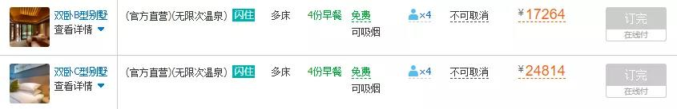
从都庄园酒店价格来自携程全民度假时代，住一晚酒店要如此高价，还一房难求！。
为什么？
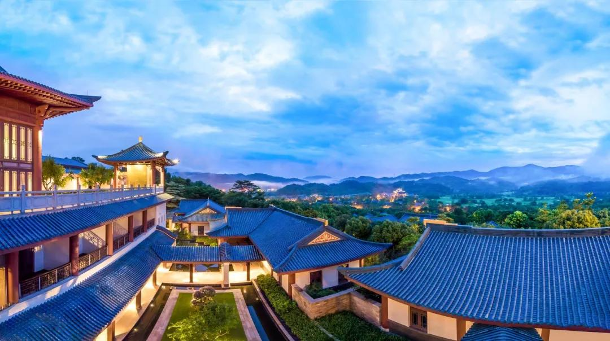
从都国际庄园假期中最令人羡慕的场景，不是奔波在各大网红景点，与大批游客同框打卡。
而是在美轮美奂的梦幻庄园，与你的亲朋好友，坐在绿草如茵、大树环绕、鲜花争艳的庭院里，看书叹茶，或是相互交谈，在静止的时光里感受假日的可贵。
美国知名的脱口秀主持人奥普拉 · 温弗瑞就曾在奥卡斯岛买下一处庄园。
这个庄园占地面积达到惊人的 17 万㎡，拥有的私人海滩长度更长达 1000 米。
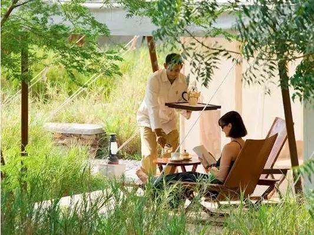
度假示意图这是现代人的最佳度假打开方式。
现国人越来越青睐到度假庄园，追求纯粹的生活享受。
而在国外，庄园同样受到钟情于自然时光的各界政要和皇室成员的追捧。
比如，此前美国前总统奥巴马曾为和夫人、女儿度假，租下了法国一座豪华庄园，这栋庄园租金极高，仅一周时间就需约 41 万人民币。
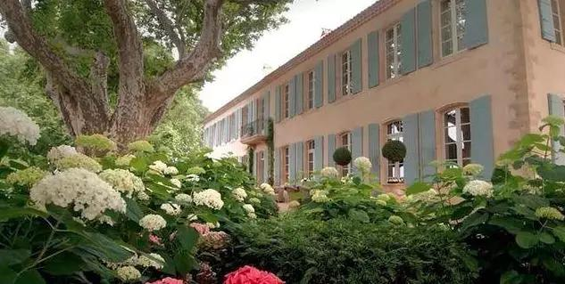
法国庄园实景图为度假花费如此高昂，足以可见，美国这位前总统对庄园度假的情有独钟。
其实，不仅是国家政要的度假首选，庄园还是英国皇室的社交场所首选。
其中，最著名的莫过于英女王的挚爱 - 温莎城堡，其本身拥有了一座大大的庄园，大片草坪随处可见。
从孩童时期起，英女王便生活在这里。直至现在，这里都是她最喜爱的度假行宫，常常在此举行私人派对。
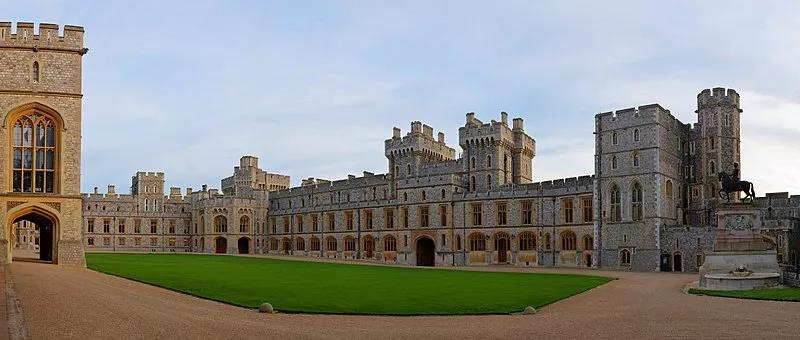
温莎城堡实景图因享有英女王与众不同的爱，温莎城堡也是国事交流的场所。
每逢皇室盛大节日，都会在此大设豪华宴席招待各国元首、名门望族和商业新贵。
名副其实是世界上流人士的社交聚集地。
中国也有媲美欧洲的大庄园
100 多位国际前政要的钟情之地
放眼国际，庄园无疑是家族身份和显赫地位的彰显。
在中国，越来越多的高端人群也意识到，需要一个突显身份、满足圈层社交需求的平台。
属于中国塔尖人群的庄园，在哪里？
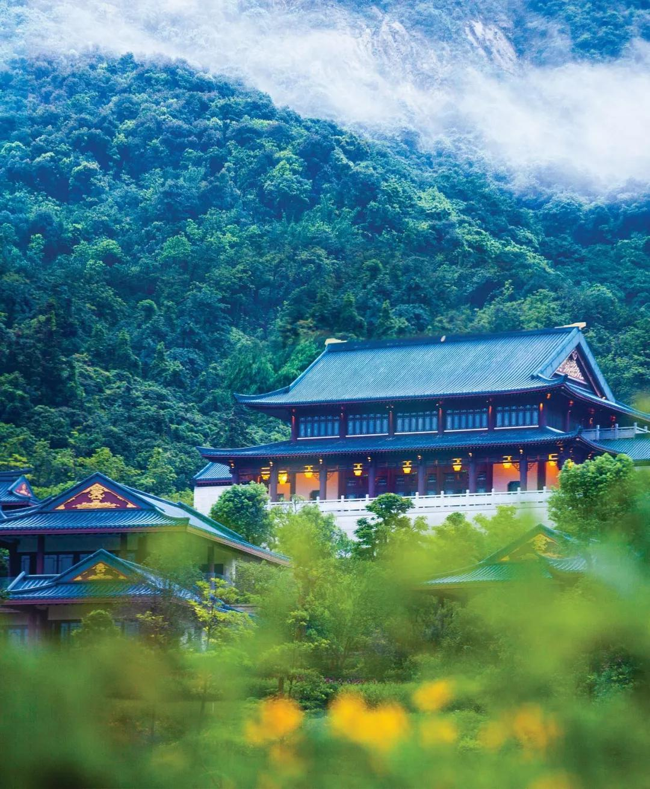
在中国南大门的广州凤凰山下，就有着一座面向世界、让 一周时间就需约 100 多位国际前政要流连忘返的国际化庄园。
这便是在中国首次提出了 “庄园社交” 的从都，一座为中国企业家的社交需求打造的中国最好的现代庄园。
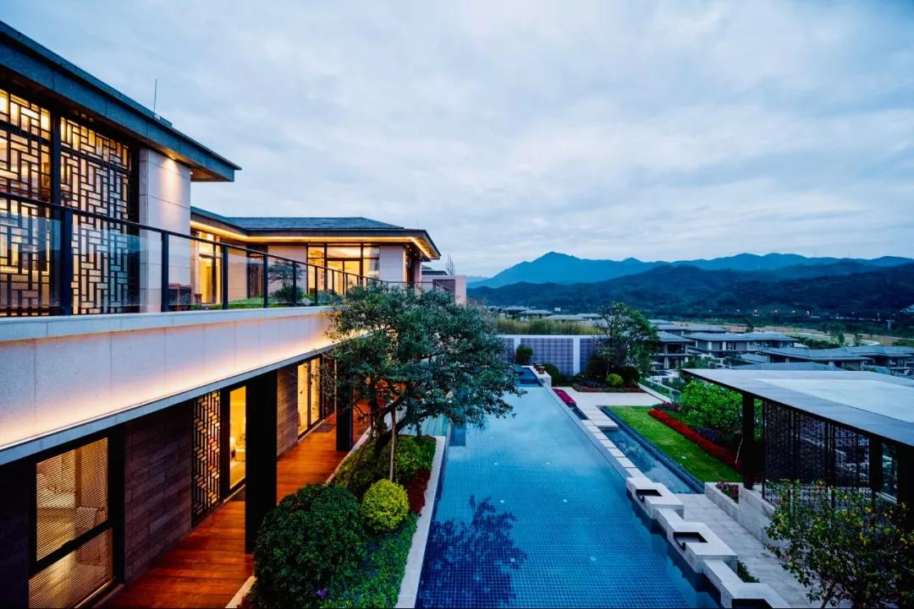
进来从都之后，你会惊讶，这里看不到一个电线杆。
掩映在森林、泉水和湖泊中的蓝色建筑，依山傍水，错落点放在绿色山林之中，很是静谧祥宁。
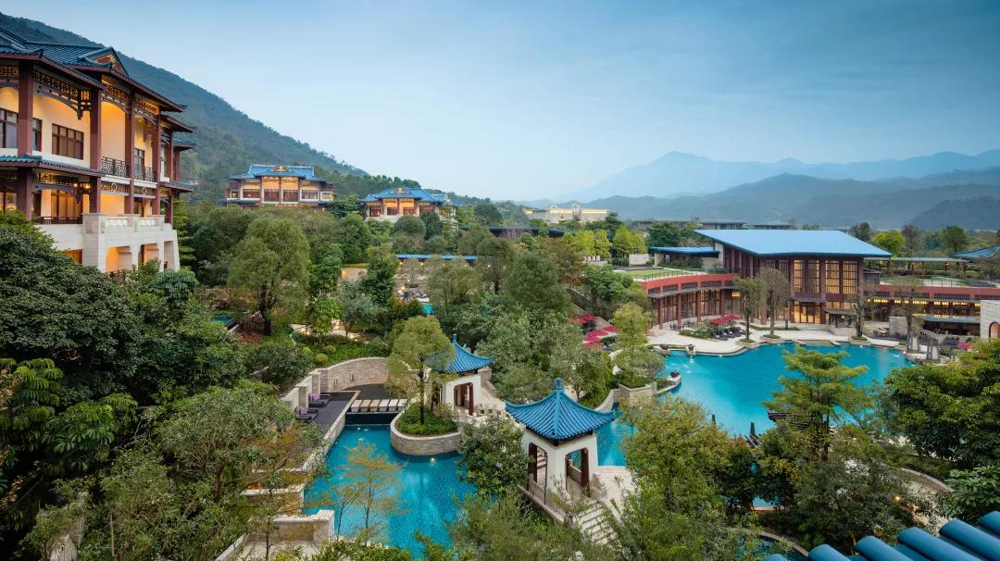
从都凭借着不可复制的湖光山色和人文景观，早已是广州乃至全国的一笔宝贵财富。
在从都，80 亿投资打造配套
做中国最好的现代庄园
被美国前总统克林顿视为 “广州安纳伯格庄园” 的从都，如今正大放异彩。
眼光独特的侨鑫，在风景秀丽的凤凰山下，在温泉养生谷中，投资超 80 亿，相当于 15 座五星级酒店的造价。
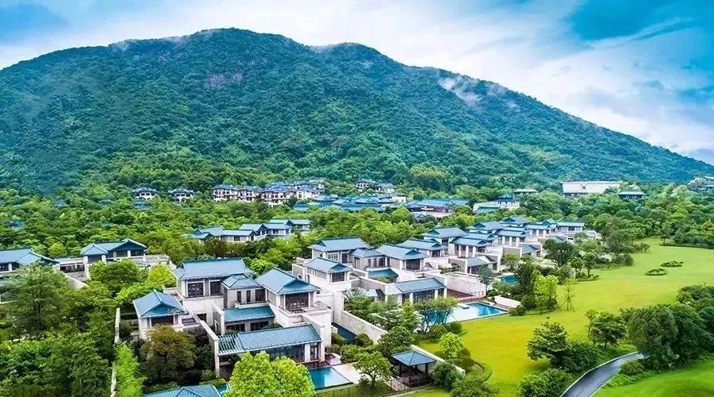
建起了既具有东方韵味又融合了现代设计的 280 万平国际化庄园。
行走在山林围绕的绿荫小道，能看到占领庄园至高点的凤凰官邸，这个专为风云领袖人物设计的建筑，是目前中国最大的总统别墅
站在窗台远眺，高尔夫、博物馆、酒店群等配套设施尽收眼底；而一览从都全景的同时，还能感受全球政要交流时的盛况。
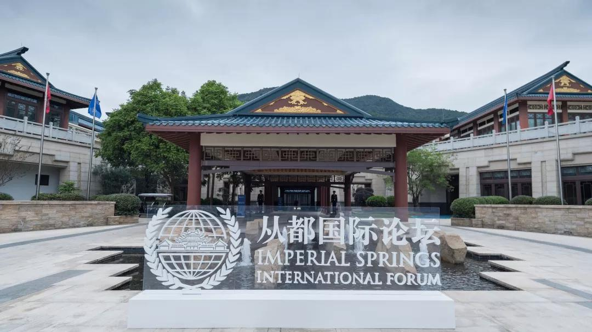
从都国际论坛截止目前，已成功举办多届高规格的从都国际论坛，来自 70 多个国家的 100 多位前政要，如美国前总统克林顿、联合国前秘书长潘基文、澳大利亚前总理霍华德等均曾莅临此地。
最令人难忘的是，从都别墅业主还能在从都与元首们打同场高尔夫球赛，并共进午宴。
以上所有珍贵的画面，早已定格在光芒万丈的从都。
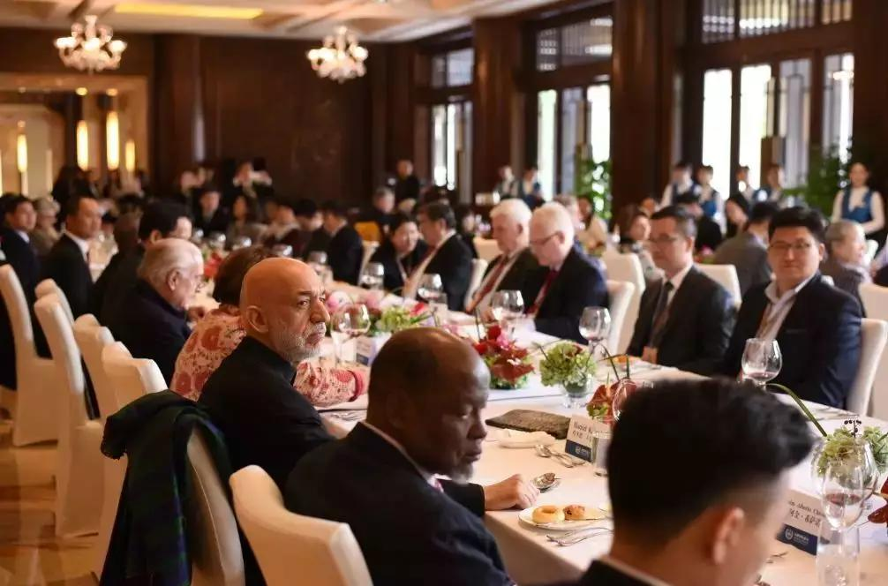
2018 年 “从都国际论坛” 的“国际前政要与工商领袖代表午宴”，为从都的贵宾提供了与国际前政要面对面交流的平台惊喜的是，从都让宾客体会了自然之美，打造圈层活动空间后，还为其提供了生命质量管理服务，致力于全方位保障每位业主的身心健康。
从都国际生命健康管理中心，让业主不出家门，就能接触到世界顶尖的健康管理团队，享世界顶级的健康管理服务，保持积极活力。
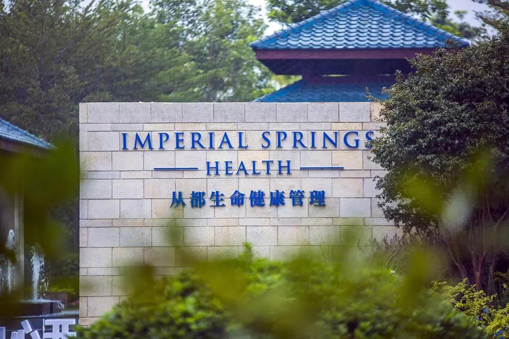
从都国际生命健康管理中心好看 “皮囊” 是万里挑一，而有趣 “灵魂” 也十足可贵。
眼看着拥 “自然 + 人文价值” 双重优势的从都变得越发受欢迎，而从都的精彩纷呈却仍在继续。
借助大湾区的利好东风，从都周边的配置也仿佛打上升级针剂。其中，仅距从都约 5 分钟车程，就坐落着香港赛马会从化马场。
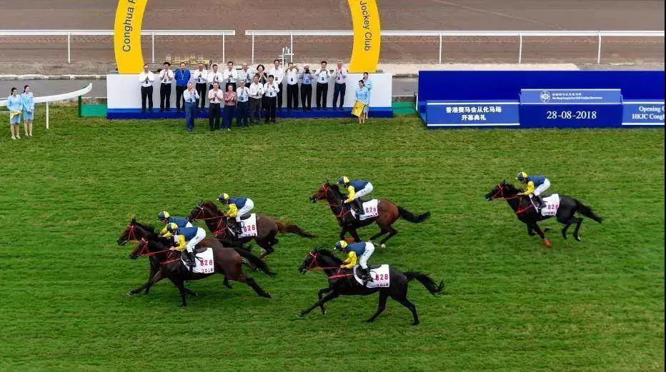
从化举办的首项世界级速度马术比赛这个国内首个最高标准、最大规模的赛马场，从都的客人们可身临其境到马训中心，观看名马洗澡、日常护理和吃饭，或与马主亲密交流。
今年初，已经举办的首项世界级速度马术比赛，来自港澳的名流在感受完赛场的速度与激情后，在从都享受了元首同款的庄园度假时光，融入了从都的朋友圈。
中国最具价值别墅
托管计划带来无忧最美庄园生活
占地 4000 多亩，按正常开发模式可建 1000 套别墅，可从都只用少数土地，仅造 100 多套可销售的别墅。
其余全是山林、流水、鲜花，脚步每到一处，收获的都是好风景。
如此强大的配置注定了从都的高贵基因，其无论别墅设计规划、还是户型装修，都是以企业家人群的需求来打造。
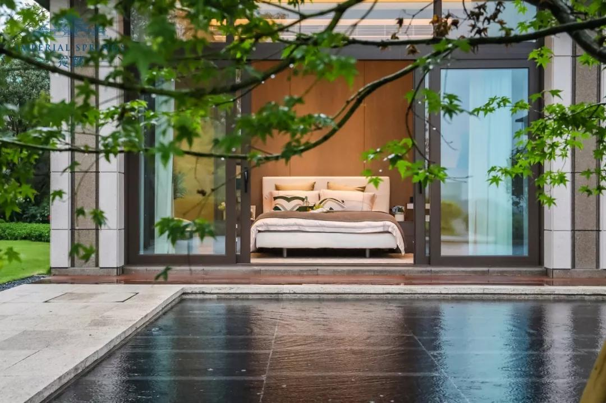
别墅院子设计了足足 30 米的横向面宽，在保证空间阔绰舒适之余，还能在室内一览 “全面景观”。
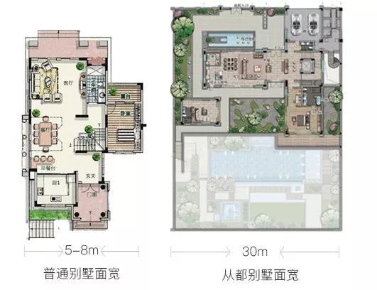
当然，在从都庄园温泉别墅，最大的惊喜便是能享受到 “与自然在一起” 的最美庄园生活。
这得益于从都别墅的独特设计, 以院落分区，布满花木，从而形成每户 8-10 个庭院的 “夸张” 布局。
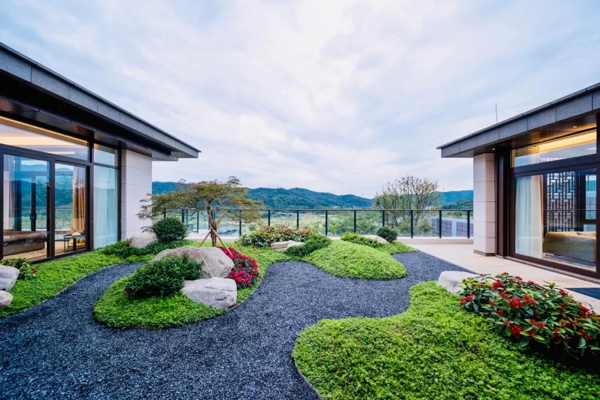
如建面 380㎡的别墅，光是景观庭院就设计了 10 个，且每个庭院都能包围房间。
这种 “一室一庭院” 的空间设计，好处在于，让每个房间拥有私人院落的同时，还能与大自然亲密接触。
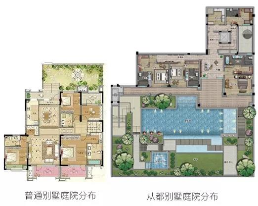
晨辉映照，睡到自然醒后慵懒走出阳台，在花木环抱中拥爱人入怀。
日当正午，与家人在花木如茵的庭院内，享天伦之乐。
落日余晖，约上三五知己，在绿意盎然的后花园开设户外晚宴，共度欢乐时光。
值得一提的是，比肩瑞士的氡温泉入户的 “神奇” 设计，更是让从都温泉别墅摇身一变成“世界珍稀温泉圣地”。
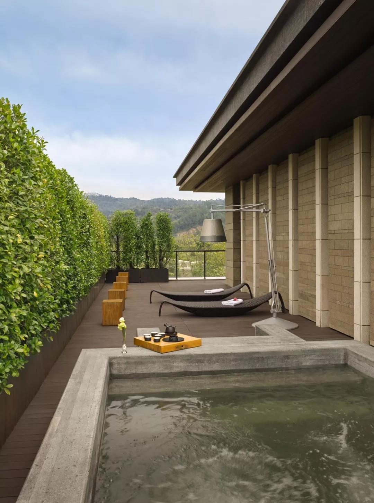
氡温泉入户硬件之外，最后的竞争就在于服务，每个顶级项目都有自己的风格特色。
但是最终能够打动、打赢、打败时间的，往往就取决于服务。
留在从都，不仅有诗和远方，更有你此前未享受过的贴心服务。
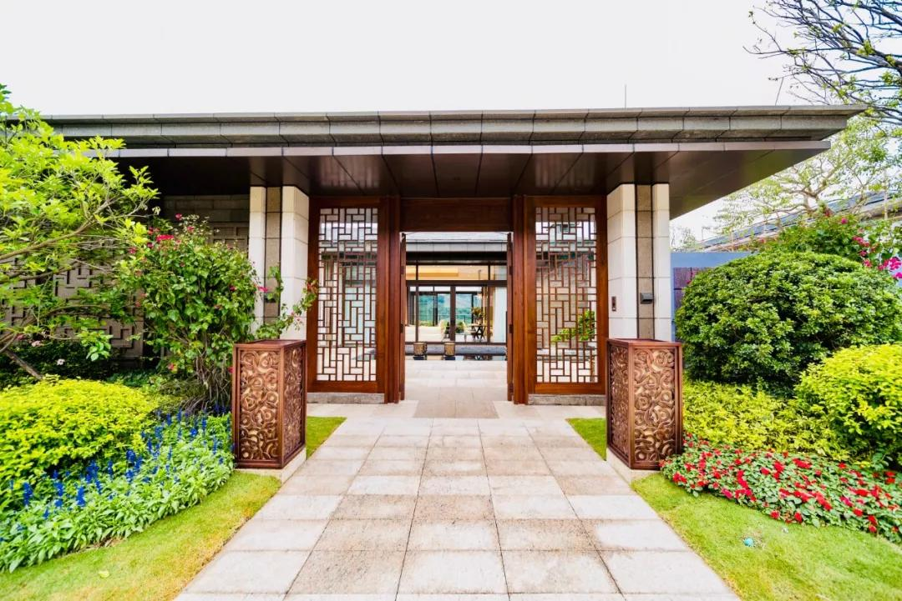
比如，庄园配备了 800 人的服务团队、私人管家经法国皇室管家学院培训。
24 小时随时响应，满足贵宾的个性化需求，只为让客人能享有尊贵的品质体验。
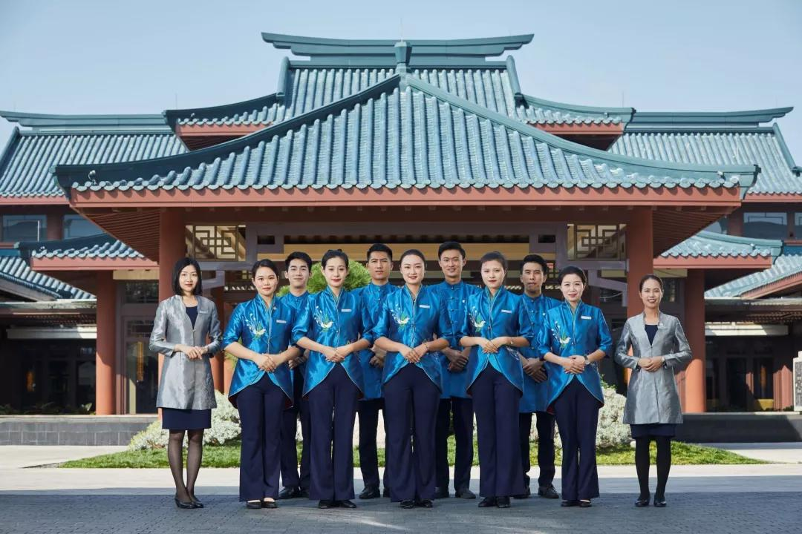
针对有不同需求的业主，从都还推出无忧托管服务：
部分业主追求 “投资 + 度假” 两不误的理想状态，因此庄园为此人群提供全托管服务，提供六大核心服务内容。
针对作为第一居所来自住的业主，从都也能提供轻托管服务，如养护服务，物业服务等酒店式管理服务，甚至是日常的生活食材配送服务，让居住无忧。
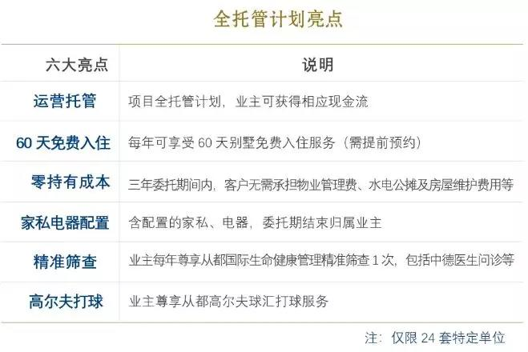
与其同时，还有交通配套的升级。
在从都，其出行方式也有着普通度假项目无法比拟的优势，原因是其精心打造了私家直升机停机坪。
目前，从都周边交通配套也是 “突飞猛进”，将从化带入天河半小时生活圈的北部快线，更是报出今年 10 月动工的好消息。
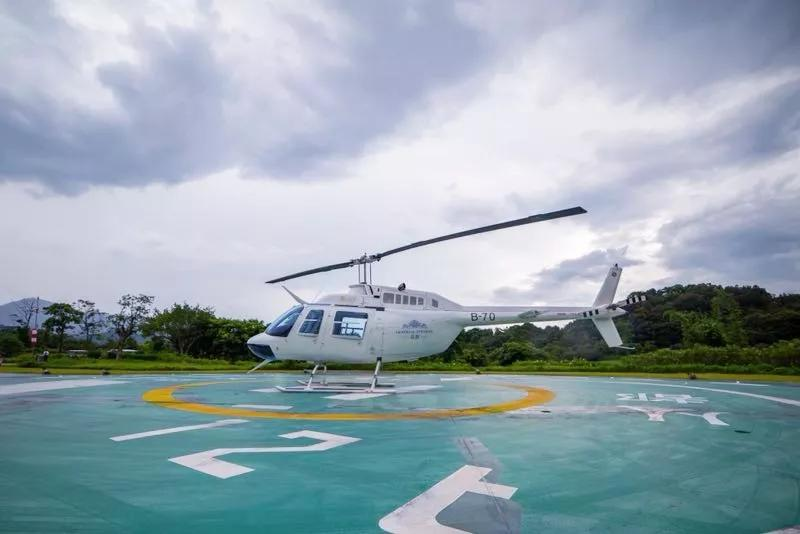
从都直升机停机坪总之，生活在这里，每日都能拥有美妙时光。
征服了全球 100 多位前政要的从都。
这座梦之城，会是你的庄园生活目的地吗？
文章来源:广州楼市发布